Building Automation
Industrial Automation
Power Automation & Safety


Bangladesh Distributor
Special I/O Units
Special I/O Units can be used to handle advanced machine control needs, such as temperature control, position control, and communications.
Special I/O Units List
There are 11 products of Special I/O Units.
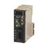 CJ-series CompoNet Master Units CJ1W-CRM21
NJ/CJ-series CompoNet Master Units Increase the Range of Applicability of Sensors and Actuators.
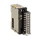 CJ-series Process Analog I/O Unit CJ1W-PTS
A Single Unit Handling All Types of Inputs such as Temperature Sensor Inputs and Analog Signal Inputs (e.g., 4 to 20 mA or 1 to 5 V)
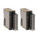 CJ-Series Analog I/O Unit CJ1W-AD / DA / MAD
Consistent Microsecond Throughput: Models with Direct Conversion Join the Lineup. This unit is available for CJ/NJ controller.
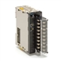 CJ-series Process Analog I/O Unit CJ1W-PDC15
A Single Unit Handling All Types of Inputs such as Temperature Sensor Inputs and Analog Signal Inputs (e.g., 4 to 20 mA or 1 to 5 V). This unit is available for CJ/NJ controller.
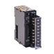 CJ Series Temperature Control Unit CJ1W-TC
A Single Unit Performing All the Functions of 4 Temperature Controllers. This unit is available for CJ/NJ controller.
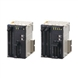 CJ-series Position Control Units (High-Speed type) CJ1W-NC[][]4
Motion Control Capabilities with Unit Synchronization and Even Higher Speed
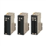 CJ series Position Control Units CJ1W-NC[][]3
High-speed, High-precision positioning with 1, 2, or 4 axes
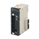 CJ-series High-speed Counter Unit CJ1W-CT021
High-Speed, Flexible Control With A Wide Array of Features. This unit is available for CJ/NJ controller.
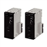 CJ Series ID Sensor Unit CJ1W-V680C11 / V680C12
Communication Unit Dedicated for RFID V680 Allowing Direct Connection to OMRON PLC CJ/CS/NJ-series
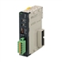 CJ-series CompoBus/S Master Unit CJ1W-SRM21
CompoBus/S is a high-speed I/O bus
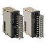 CJ-series Process Analog I/O Unit CJ1W-PH41U / AD04U
A Single Unit Handling All Types of Inputs such as Temperature Sensor Inputs and Analog Signal Inputs (e.g., 4 to 20 mA or 1 to 5 V)
Related Contents
- Automation Systems
- Programmable Controllers